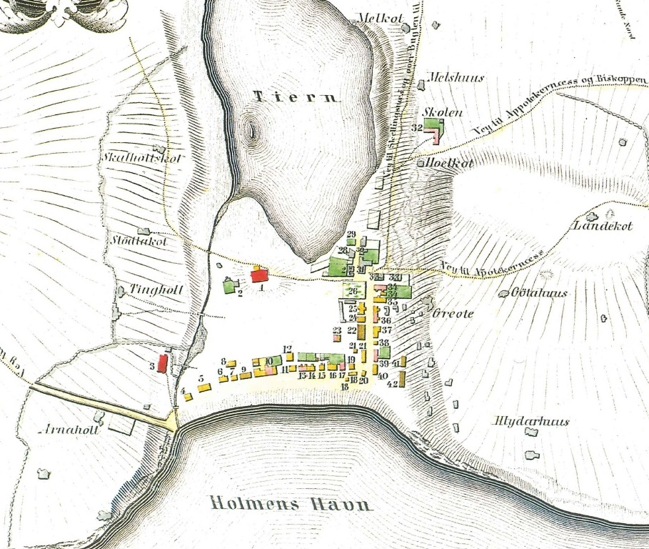
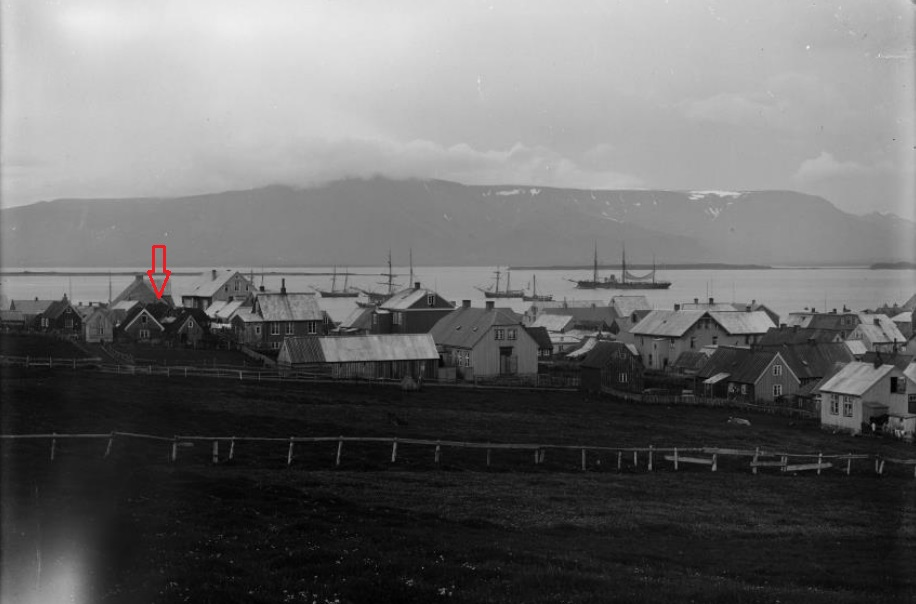

1703 – 1835
Grjóti var ein af hjáleigum Reykjavíkur. Ekki er ljóst hvenær bærinn var fyrst byggður, en árið 1703 er getið um smákot þar. Býlum í kring fjölgaði og var upphafið að Grjótaþorpinu og bæirnir næst Grjóta mynduðu klasa og voru að jafnaði nefndir Grjótabæir þótt hver bær hefði eigið nafn. Grýtt tún Grjóta lá eftir brekkunni norður frá bænum í átt að Grófinni. Um 1790 var grjótið hreinsað úr túninu og notað í veggi Dómkirkjunnar við Austurvöll. Í kjölfarið hófst mikil garðrækt á svæðinu. Í manntali 1835 eru talin sjö heimili í Grjótabæjunum og 35 manns þar skráðir til heimilis. Grjóti stóð þar sem nú er Grjótagata 14 eða 14b, og er í dag opið svæði.

Kvosin og nágrenni1801
1801
Kort frá 1801 sem sýnir Kvosina og næsta nágrenni. Hús fyrirmanna eru númeruð, en torfbæir flestir ólitaðir og ómerktir. Þó er Grjóti nefndur (Greote) á myndinni, enda ein af hjáleigum Reykjavíkur. Þótt bæirnir í kring hafi verið kenndir við bæinn Grjóta var Grjóti fjarri því að teljast höfuðbýli á 19. öld. Rímnaskáldið Sigurður Breiðfjörð lést þar örsnauður og lýsir Björn Th. Björnsson því svo "Það voru þó hvorki bragvinir né bardagahetjur sem biðu eftir lausn skáldsins vonda nótt í hreysinu Grjóta þann 21. júlí 1847. Aðeins Kristín kona hans og Jens sonur þeirra sátu yfir hinum dauðvona manni, útsteyptum í mislingum; og rétt sem morgunsólin lýsti upp Grjótaþorpið, skildi hann við."
1890
Ljósmynd af Grjótaþorpi og nágrenni tekin frá Hólavelli. Vinstra megin á myndinni má sjá torfbæinn Grjóta (rauð píla). Þetta er jafnvel eina ljósmyndin sem er til af bænum.
Takmarkaðar heimildir frá fyrri tíð eru til um býlið Grjóta, enda fátt fyrirmanna sem þar bjó. Í annálum er getið um þjófnaðarmál sem upp kom árið 1699 og nokkrir íbúar í Grjóta voru viðriðnir. Samkvæmt Jarðabókinni árið 1703 fyrir Seltjarnarneshrepp, þá var ábúandi í Grjóta Jón Þorvaldsson og sagðir 4 heimilismenn og fimmta húskona, sem „fæddi sig sjálf“.

Grjótaþorp frá Hólavelli1890